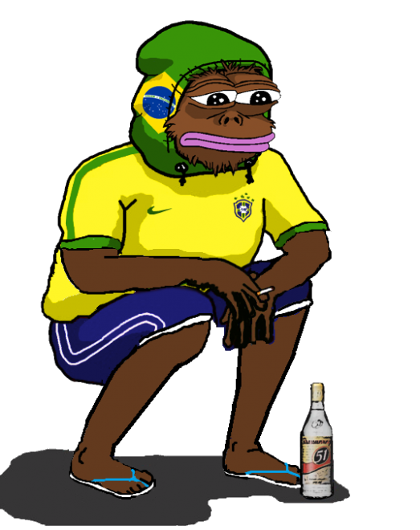
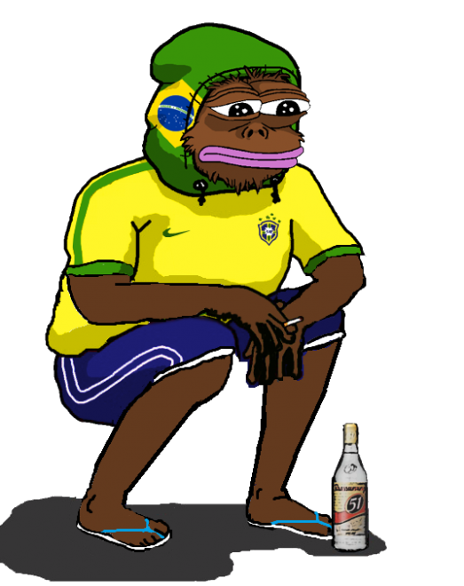

Este é o Pepe retirado de seu contexto original

Este é o mesmo personagem em 2017.
Informações gerais
Pepe the Frog (/ ˈpɛpeɪ /) é um meme da Internet. Um sapo antropomórfico verde com um corpo humanóide, Pepe se originou em uma história em quadrinhos de Matt Furie chamada Boy's Club. Tornou-se um meme da Internet quando sua popularidade cresceu constantemente no Myspace, Gaia Online e 4chan em 2008. Em 2015, tornou-se um dos memes mais populares usados no 4chan e no Tumblr. Diferentes tipos de Pepe incluem "Sad Frog", "Smug Frog", "Angry Pepe", "Feel Frog" e "Você nunca ...". Desde 2014, "Rare Pepes" foi publicado no (mercado sarcástico) "meme market" como se fossem cartões de comércio.
Nos anos 2010, a imagem do personagem foi apropriada como um símbolo do movimento alt-right. A Liga Anti-Difamação (ADL) incluiu Pepe em seu banco de dados de símbolos de ódio em 2016, mas disse que a maioria dos casos de Pepe não foi usada em um contexto relacionado a ódio. Desde então, o criador de Pepe expressou sua consternação por Pepe ser usado como um símbolo de ódio por determinados grupos e processou organizações por isso.
Alguns fatos cronológicos
- Foi criado em 2005, numa historia em quadrinhos, onde aparecia urinando em pé e com as calças abaixadas e dizendo Feels good man!, referindo-se àquela posição.
- Eis que 2008 um usuário do 4chan /b/ posta uma montagem substituindo o texto original por Feels bad man! e retirando Pepe do contexto original
- A partir de 2009 a imagem (feelsbadman.jpg) foi vista em posts onde o OP tinha baixa perspectiva diante de frustrações da vida
- No final de 2010, um domínio foi criado* em homenagem à imagem!! Adivinha o que constava nele? Sim, uma imagem do sapo triste.
- Em 2012 Pepe, o sapo triste, ficou famoso também na plataforma Tumblr. Como outros memes, o destino fatídico de Pepe parecia estar próximo, pois daí iria para sites mais mainstream como Facebook e Twitter
- Já em 2014, páginas de humor usavam o Pepe em contextos distorcidos do original, cada vez mais repostados e comprimidas pelo algoritmo JPEG, gerando perda de qualidade irreversível a cada novo post. Ele agora estava nas mãos das pessoas normais!!
- Transformava-se, cada vez mais, em mais um entre as centenas de memes que circulavam pela internet e seriam esquecidos meses depois
- No final de 2014 ano Katy Perry postou uma das variações dele em seu Twitter, gerando 16 mil curtidas e 8 mil retweets
- Mais páginas de Facebook postavam versões descontextualizadas e comprimidas, transformando Pepe em alguém normal, alguém que tinha amigos, que tinha namorada, um cafajeste, que saia pra balada. Não era assim que Pepe queria ser lembrado!!
- O fim do Pepe original estava decretado, tudo parecia irreversível
- No ano seguinte, um ano antes das eleições dos EUA, Donald Trump tuitou uma montagem de pepe com seu formato de cabelo; tendo a direita alternativa o escolhido como candidato foi o começo do uso do meme por esse grupo
- Em 2016, após muitas reedições do meme em contextos duvidosos, a ADL adicionou-o como símbolo de ódio
- Desde então todos os grupos políticos de direita se apropriaram de Pepe, bem como variados grupos de internautas que frequentam os chans da internet. Pepe é utilizado em diversos contextos, tanto para expressar tristeza quanto felicidade.
Outras curiosidades
- O cartunista da charge nem tinha a intenção de torná-lo esse sucesso todo...
- E ficou chateado com o destino que tomou seu personagem!!
- Existem mais de 5000 variações de Pepe, a maioria feita em programas tipo Paint
- Pepes raros são feitos para não serem compartilhados. Algumas imagens até possuem penalidades para quem compartilhá-las
- Fora as dezenas de contextos diferentes
- Em 2019, Pepe foi usado por manifestantes nos protestos contra a extradição de Hong Kong como um símbolo de liberdade e resistência
- Se existe uma música que representa Pepe; ela se chama Shadilay e foi composta por um artista italiano chamado P.E.P.E. (Point-Emerging-Probably-Entering) na década de 80
Alguns exemplos das milhares de variações do Pepe


 
